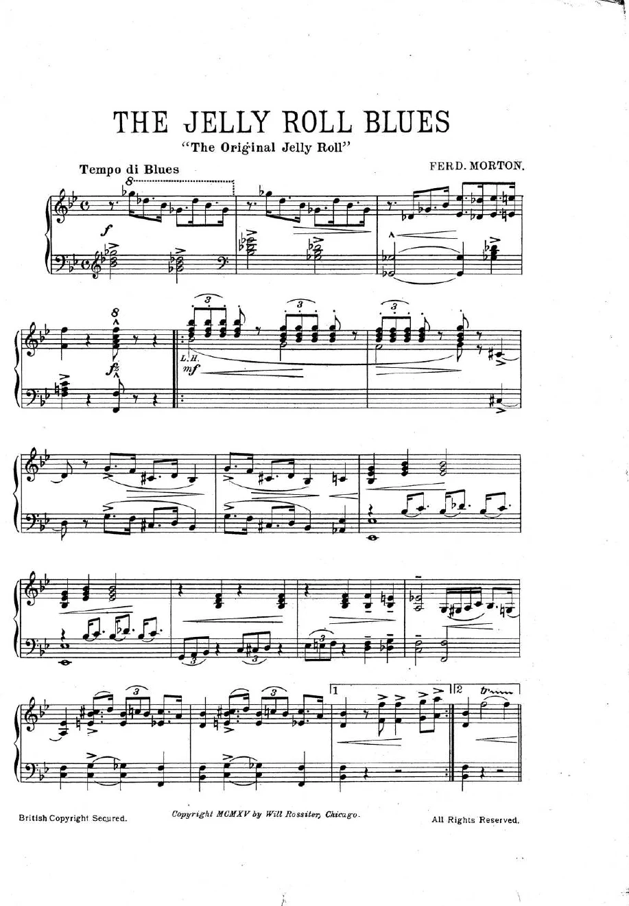
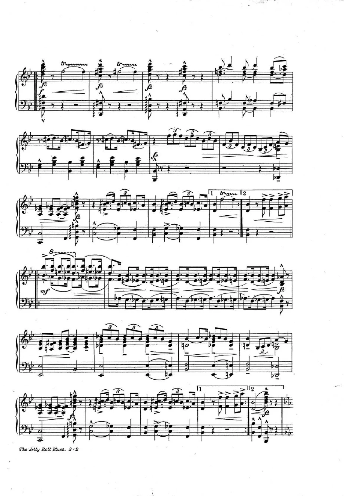
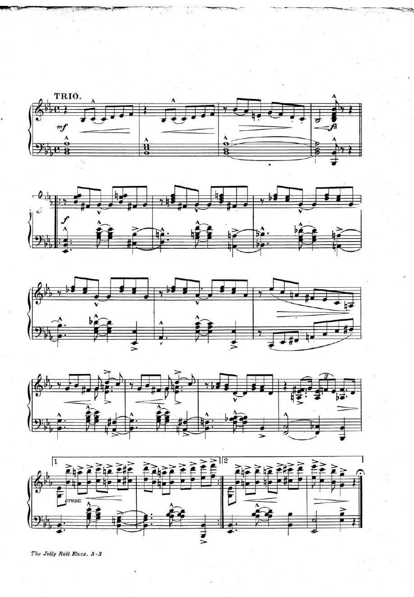
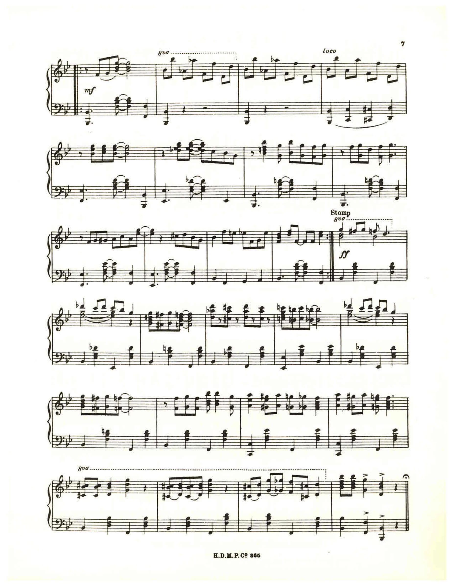
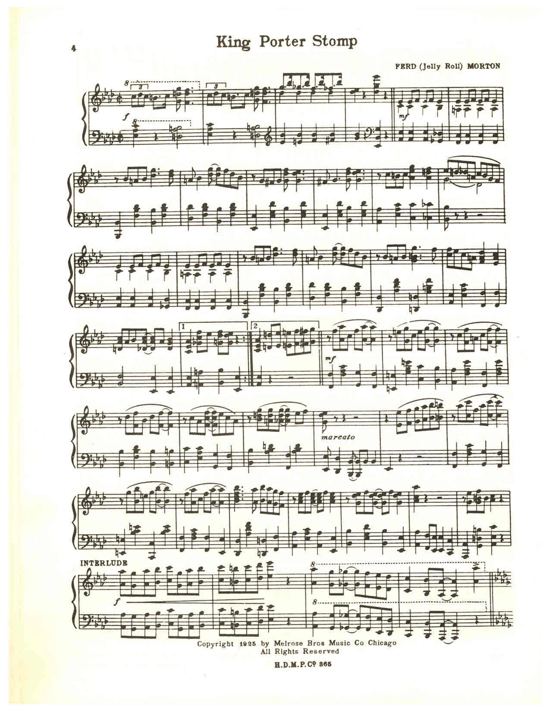
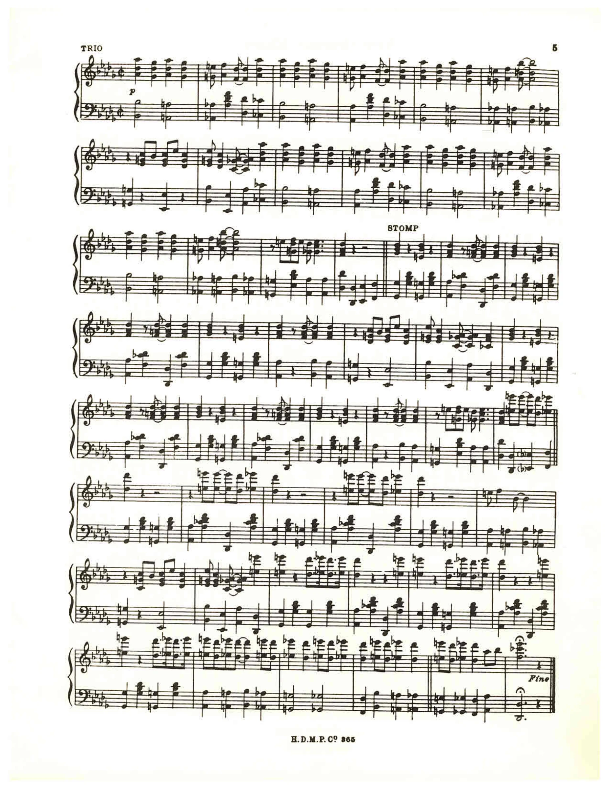
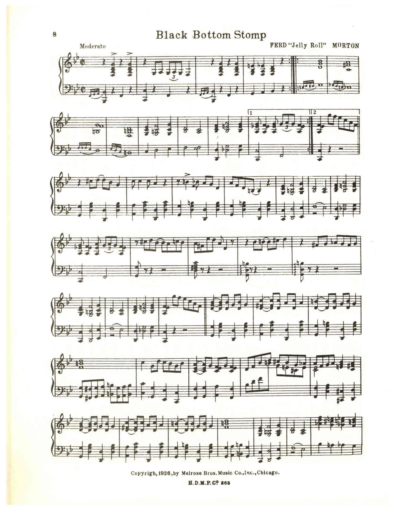
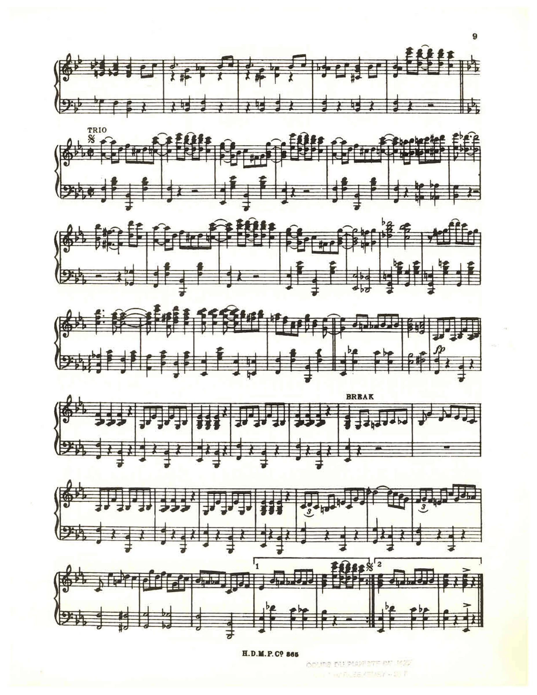

Music · Early Jazz · Composing & Arranging
Jelly Roll Morton
Jelly Roll Morton (c. 1890–1941) was one of the first musicians to write jazz down. A pianist from New Orleans, he published Original Jelly Roll Blues in 1915, and in the 1920s he led a recording band, the Red Hot Peppers, whose records mixed carefully planned arrangements with room for improvisation. He liked to claim he had invented jazz. He hadn’t, but he showed how jazz could be composed.
Who Was Jelly Roll Morton?

Ferdinand Joseph LaMothe, known professionally as Jelly Roll Morton, grew up in New Orleans in a Louisiana Creole community. He is generally dated to 1890, although accounts of his birth differ. As a teenager he played piano in the city’s saloons and dance halls; he later said that his great-grandmother threw him out of the house when she found out. He absorbed ragtime, blues, dance music and Caribbean-influenced rhythms.
Through the 1900s and 1910s he traveled widely across the South and West as a pianist, pool player and showman, and lived in California from 1917 to 1922. His Original Jelly Roll Blues appeared in print in 1915, among the earliest published jazz compositions. In 1923 he settled in Chicago, recorded piano solos and published his music. The Red Hot Peppers sessions of 1926, including Black Bottom Stomp, show how he combined arranged passages, contrasting textures and individual instrumental voices.
Morton was a composer and arranger as well as a pianist. His music helps us hear jazz as organized ensemble work: a musician can improvise within a structure that somebody has planned. Printed piano scores preserve one version of a work, but they do not capture every detail of the recorded band arrangement.
When the Great Depression hit and tastes changed, his career declined; by the late 1930s he was running a small nightclub in Washington, D.C. In 1938 Alan Lomax recorded Morton’s playing and recollections at the Library of Congress. These interviews are valuable primary sources, but Morton’s claim to have invented jazz should be examined critically. Jazz developed through many musicians and communities. Morton died in Los Angeles on July 10, 1941.
A Life Writing Jazz Down
- c. 1890 Born in New Orleans; accounts of his birth differ.
- 1900s Plays piano in New Orleans and begins traveling as a performer.
- 1915 Original Jelly Roll Blues is published.
- 1917–22 Lives and performs in California.
- 1923 Moves to Chicago; records piano solos, including King Porter Stomp.
- 1926 Records Black Bottom Stomp with the Red Hot Peppers.
- 1928 Moves to New York.
- 1938 Records hours of interviews and music for Alan Lomax at the Library of Congress.
- 1941 Dies July 10 in Los Angeles.
- 1992 The Broadway musical Jelly’s Last Jam tells his story.
Arrangement Makes Room for Conversation
An arrangement decides who plays, when they enter, and how musical ideas fit together. Improvisation adds decisions made during performance. Early jazz can include both: a planned introduction, a solo, a break, and a return of the ensemble.
Predict: Can three different parts sound organized? One student taps a steady pulse, another repeats a short rhythm, and a third invents a two-beat answer. Test: give the third student a silent space after every fourth bar. Explain: does that planned space make the improvised response easier to hear?
Morton described a “Spanish tinge” in jazz: rhythmic influences associated with Caribbean and Latin dance traditions. Explore the accompaniment of New Orleans Blues, and distinguish that rhythmic idea from the melody above it. A piano score can suggest several ensemble roles at once.
Morton’s records sound free, but many of their entrances, breaks and endings were decided before the session.
Why did Morton care so much about breaks?
Did Morton invent jazz by himself?
Read & Play: Four Morton Pieces
Choose a piece from the display above. Play its melody excerpt, slow the tempo, and open the note list to practice reading. Each piece also has its original sheet-music pages, which enlarge for class discussion.
The player uses a classroom melody reduction, not the complete piano or vocal arrangement. Each caption names the passage and any omissions. The original scores are public domain in the United States; rights vary by country.
Original Jelly Roll Blues · read, listen, and explore
Compare the same descending figure high and low before the last bar leaves space.
Read the complete original sheet music
Click a page to enlarge it. Use the arrow keys to step through this work; Escape closes the viewer. The page player above performs only the identified excerpt.



New Orleans Blues · read, listen, and explore
Hear the wide alternating notes, then find where A-flat changes to A-natural.
Read the complete original sheet music
Click a page to enlarge it. Use the arrow keys to step through this work; Escape closes the viewer. The page player above performs only the identified excerpt.

King Porter Stomp · read, listen, and explore
Read the small repeated pattern, then explore how the complete score develops it.
Read the complete original sheet music
Click a page to enlarge it. Use the arrow keys to step through this work; Escape closes the viewer. The page player above performs only the identified excerpt.


Black Bottom Stomp · read, listen, and explore
Find the tie in the first bar and the repeated C in the answer.
Read the complete original sheet music
Click a page to enlarge it. Use the arrow keys to step through this work; Escape closes the viewer. The page player above performs only the identified excerpt.


Listen for Evidence
Teacher: choose an authorized recording through your school’s library or the collections linked in Sources. Recordings of these works made from 1926 on are still under U.S. copyright, so this lesson does not reproduce them. Play a short passage twice. First identify a feature; then note a timestamp and describe what you actually hear.
- Black Bottom Stomp (Red Hot Peppers, 1926): listen for the planned breaks and for how the texture changes from section to section.
- King Porter Stomp (piano solo): compare a recording with the score above. What does the performer add that the page leaves out?
- New Orleans Blues: listen for the “Spanish tinge” in the left hand, and separate it from the melody above it.
Morton’s Key Contributions
Original Jelly Roll Blues (1915) is often called the first published jazz composition, showing that jazz could be written down.
He planned introductions, breaks, stop-time passages and endings, giving improvisers a structure to play inside.
He loosened ragtime’s even rhythms into swinging jazz piano, and his early-1920s piano solos influenced many players.
He insisted that Caribbean and Latin rhythms, such as the habanera, were an essential ingredient of jazz.
His 1926–30 band records balance written ensemble passages with solos, and they are still studied as models of small-band jazz.
His 1938 Library of Congress sessions with Alan Lomax, hours of talk and piano, are among the earliest long recorded interviews with a jazz musician.
Morton’s Legacy Today
Morton died poor and half-forgotten, but his music outlived the neglect. King Porter Stomp became a swing-era anthem in Fletcher Henderson’s arrangement, recorded by Benny Goodman in 1935, and traditional jazz bands still play his tunes today.
The Lomax recordings became a key source on early New Orleans music. In 1992 the Broadway musical Jelly’s Last Jam told his story, questioning his pride as well as celebrating his talent, and in 1998 the Rock and Roll Hall of Fame inducted him as an early influence. Historians still argue about his boasts: treat them as evidence of how he saw himself, and check them against other sources.
Sources and further listening
Use these collection essays to investigate the biography and musical context. Archival recordings illustrate performances; their rights are separate from the scores above.
Practice Problems
Review: Biography · The musical idea · Read and play.
Use the biography, the musical idea and the scores above.
Easy1. In what city did Jelly Roll Morton grow up?
Easy2. In what year was Original Jelly Roll Blues published?
Medium3. What is an arrangement?
Medium4. What did Morton mean by the “Spanish tinge”?
Medium5. What is a break in early jazz?
Medium6. Morton recorded Black Bottom Stomp in 1926 and his Library of Congress interviews in 1938. How many years apart are they?
Challenge7. Morton claimed he invented jazz. How should a historian treat that claim?
Challenge8. Which bandleader’s 1935 recording turned King Porter Stomp into a swing-era hit?
Create and reflect
- Choose one score. Identify its meter, key signature, and one repeat or contrasting section.
- Perform a short phrase twice: first as written, then with one deliberate rhythmic change. Keep the pulse steady. Explain what changed.
- How can an arrangement help improvisers listen to each other? Describe one planned entrance, break, or repeated section you would use.
Did Morton invent jazz by himself?
Exit ticket: name one observation you can support with the score and one historical claim you can support with a source.
Continue with Sheet Music Trainer, Fake Book, or George Gershwin.